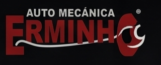
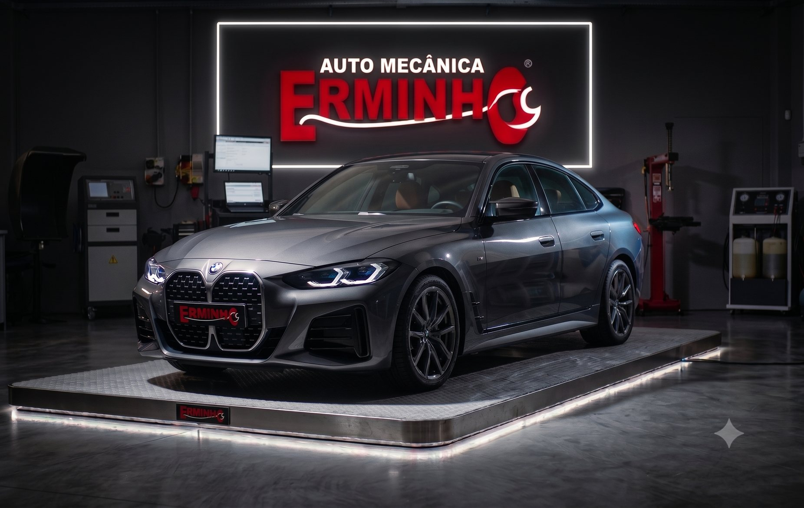

Revisão completa
Checagem item a item, com o que precisa de atenção agora separado do que ainda pode esperar.

Santa Tereza do Oeste — PRCascavel — PRDiagnóstico preciso, peças genuínas e acabamento de concessionária. É isso que sai da nossa oficina — sem retrabalho.

Excelência que dispensa retrabalho.
Qualidade que o seu Carro Merece.
Estrutura própria, equipe especializada e um jeito de trabalhar que não devolve carro pela metade. O que sai daqui sai pronto.
Conheça a oficinaFeito por diálise, flush, com produtos MOTUL, programação do câmbio e acompanhamento do scanner.
Agende a sua troca diretamente conosco!Cada serviço começa pela causa, não pelo palpite. É por isso que o carro não volta pelo mesmo problema.
Checagem item a item, com o que precisa de atenção agora separado do que ainda pode esperar.
Óleo e filtros na especificação do fabricante, com produtos MOTUL e o registro da próxima troca.
Troca por diálise com flush, programação do câmbio e acompanhamento pelo scanner do início ao fim.
Ruído, folga e frenagem investigados de verdade. Peça genuína e teste antes de devolver o carro.
Leitura eletrônica pra achar a causa, não o sintoma. Sem troca de peça no chute.
Plano de revisões pra evitar a quebra cara. O carro roda, e você não fica a pé.
Você sabe exatamente o que entrou no seu carro — e por quê.
Lubrificantes de alta performance como padrão da casa.
Diagnóstico eletrônico feito aqui dentro, sem terceirizar o problema.
Estrutura moderna, equipe especializada e produtos MOTUL pra garantir que o seu carro saia daqui com qualidade.
Conta o que está acontecendo. A gente responde pelo WhatsApp com o horário disponível.
R. Internacional, 2191 — Santa Tereza do Oeste - PR, 85825-000
(45) 90000-0000 (demonstração)